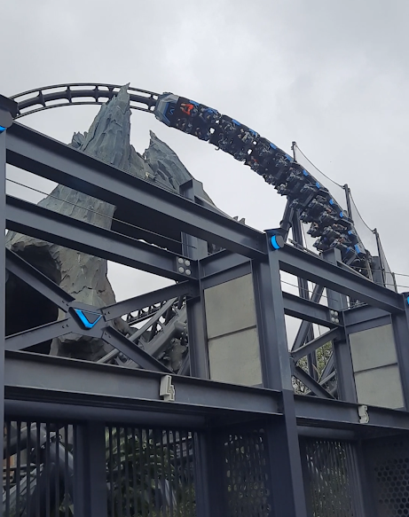

Intamin
Intamin is a renowned roller coaster and ride manufacturer known for its innovation, high-thrill designs, and willingness to push engineering boundaries. Founded in Switzerland, Intamin has produced some of the world’s fastest, tallest, and most technologically advanced coasters, including record-breaking launches, towering strata coasters, and cutting-edge track systems. The company is recognized for pioneering hydraulic launch technology, prefabricated wooden coaster track, and highly dynamic layouts that emphasize speed, airtime, and powerful forces. Intamin’s designs often feature unique elements, custom layouts, and advanced train systems that deliver an intense yet fluid ride experience. Because of its versatility and engineering ambition, Intamin remains one of the most influential and respected names in the amusement industry.
Rocky Mountain Construction (RMC)

Rocky Mountain Construction (RMC) is an American roller coaster manufacturer known for revolutionizing wooden coaster design through innovative engineering and hybrid track technology. The company gained worldwide attention with its patented I-Box track, which replaces traditional wooden rails with smooth steel while retaining the wooden support structure, allowing for extreme elements, inversions, and high-intensity maneuvers previously impossible on wood coasters. RMC is also known for its Topper Track system, which enhances the smoothness and longevity of traditional wooden coasters. Their creations are celebrated for delivering strong airtime, rapid transitions, and highly dynamic layouts that blend intensity with surprising smoothness. With a bold design philosophy and a reputation for transforming older rides into modern standouts, RMC has become one of the most influential and admired manufacturers in the industry.
Bolliger & Mabillard (B&M)
Bolliger & Mabillard, commonly known as B&M, is a Swiss roller coaster manufacturer celebrated for its precision engineering, smooth ride experiences, and highly reliable designs. Since the early 1990s, B&M has become one of the most trusted names in the industry, responsible for pioneering several major coaster types such as the inverted coaster, the sit-down and stand-up looping coasters, and the iconic flying and wing coaster models. Their rides are known for wide, graceful layouts, strong yet controlled forces, and exceptionally comfortable train and restraint systems. Parks value B&M’s consistency, reliability, and low maintenance needs, while riders appreciate the signature “B&M smoothness” that sets their coasters apart. With a reputation for quality and innovation, B&M continues to shape the modern coaster landscape with elegant, high-performance designs.